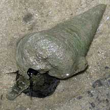
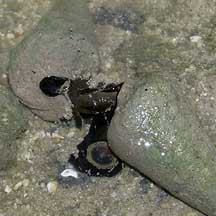
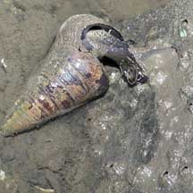

|
|
| shelled snails text index | photo index |
| Phylum Mollusca > Class Gastropoda > Family Potamididae |
| Rodong
snail Telescopium telescopium Family Potamididae updated Sep 2020
Where seen? This large snail is about the size and shape of an ice-cream cone! It is commonly seen in our mangroves, on mud, sometimes in the hundreds covering a large area. It is also called 'Rodong' or 'Berongan' in Malay. Features: 8-15cm. The largest snail seen on our mudflats, the heavy conical shell is actually beautifully patterned but the markings are usually hidden by mud and other encrusting animals. The outer lip is thin and not flared. Operculum small and circular. The animal is velvety black with a highly extendible proboscis. There is a third eye on its mantle margin, in addition to a pair of eyes at the tentacles. It can stay out of water for long periods of time. |
|
 Sungei Buloh Wetland Reserve, Mar 06 |
 Mating? Sungei Buloh Wetland Reserve, Mar 06 |
 Laying eggs? Sungei Buloh Wetland Reserve, Mar 06 |
| What does it eat? Rodong sucks
up detritus and algae from the mud surface at low tide, using its
proboscis. Human uses: It is eaten and is said to be delicious when steamed and eaten with chilli. It is gathered for food in Southeast Asia and often sold in traditional markets. |
| Rodong snails on Singapore shores |
On wildsingapore
flickr
|
| Other sightings on Singapore shores |
Links
References
|